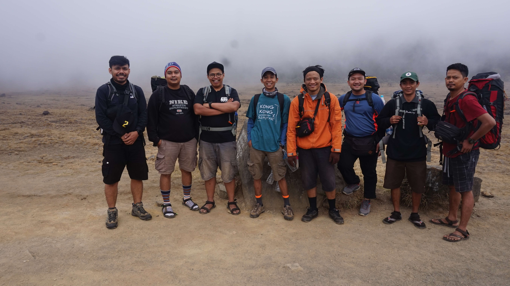
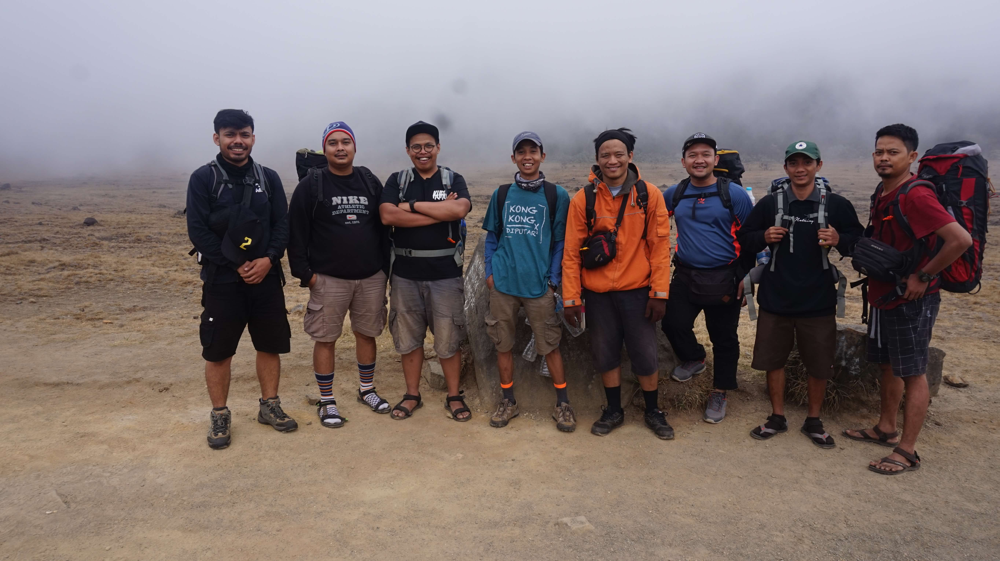
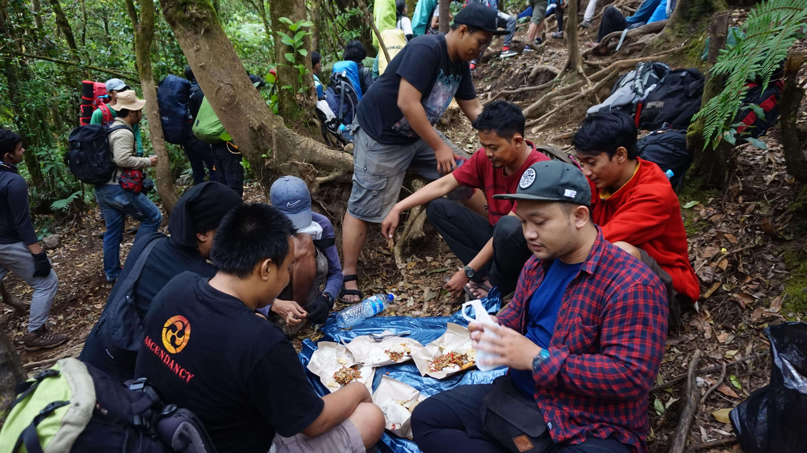
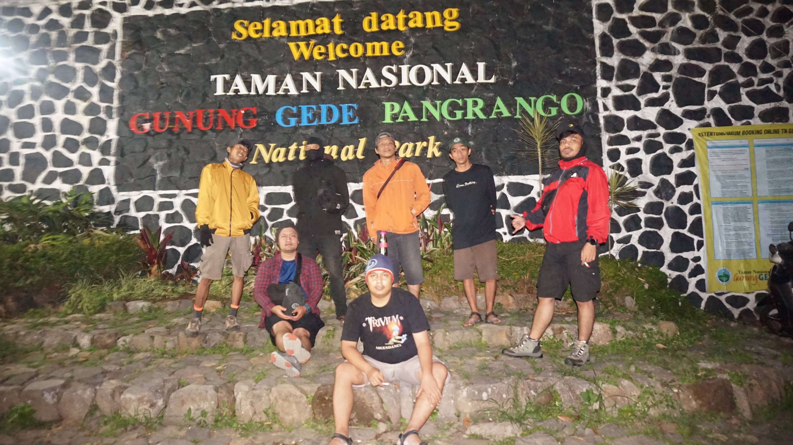
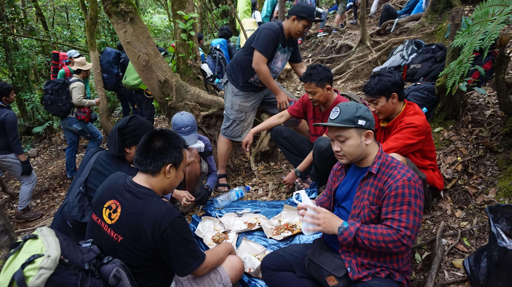
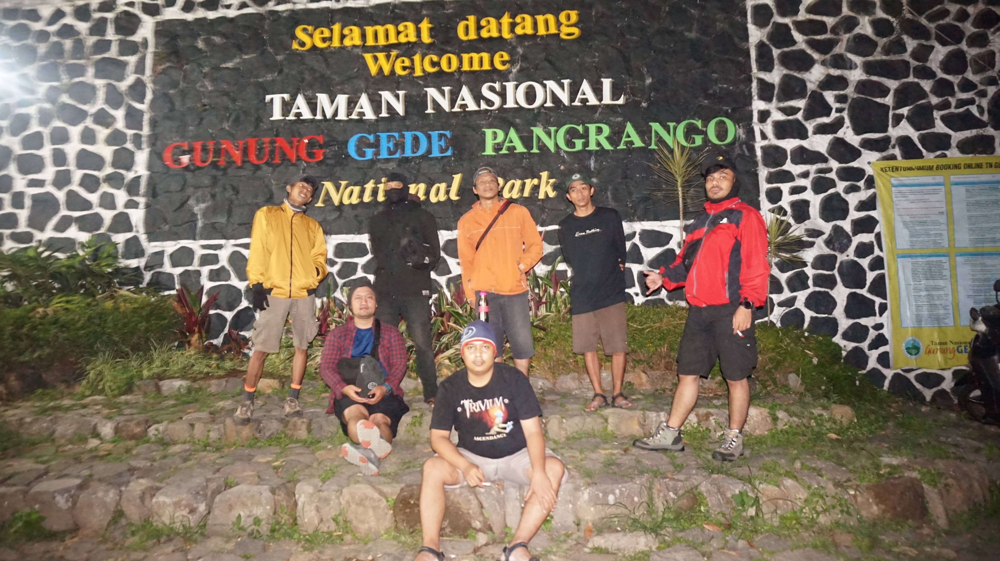

Wisata Gunung Gede
Perjalanan ke gunung gede kali ini memulai keberangkatan dari jakarta menuju ke
daerah cipanas yang
merupakan pintu gerbang masuk pendakian, dari jakarta rombongan kami berjumalah sekitar 8 orang
menggunakan 1 mobil avanza ! "wawww banyakan 1 mobil 8 orang belum termaksud tas yang isi nya udah pasti
ga ada yang kecil, kecuali tas 'kang baso' yang buat simpan dompet dan HP".
kita berangkat dari jakarta sekitar pukul jam 11 malam , ngaret 2 jam dari estimasi janjian jam 9 malam,
sebelum sampai di tujuan kita mampir dulu di sekitar daerah puncak untuk beli buah, sayur dan tambahan
perbekalan logistik, kurang lebih sekitar 2 jam akhir nya sampai juga di pintu masuk pendakian.
Sekitar pukul pukul jam 2 pagi , kita akhir nya istirahat untuk bersiap memulai pendakian , tapi namanya
juga udah kumpul rame-rame susah buat istirahat dan akhirnya cuma tidur ayam, baru sekitar pukul 4 pagi
kita rencana akan naik dari gerbang pendakian Putri dan turun di cibodas, karena posisi kita sedang ada
di cibodas jadi kita carter angkot untuk kesana dengan biaya sekitar 150ribu, mobil kita tinggal karena
pulang nya kita akan lewat cibodas lagi.
untuk perjalanan dari gerbang putri itu memakan waktu sekitar 8 jam , itupun kalau lancar , dikarenakan
kelompok kami jarang olahraga, rajin begadang dan susah hidup sehat yuudah jadi baru jalan sebentar ud
istirahat, jalan sebentar lagi istirahat lagi ngopi dulu sebats dulu, tapi memang kita ga target
buru-buru si jadi santai ajah di jalan, ohya untuk pemandangan di awal perjalanan tuh kiri kanan kita
disuguhin sama perkebunan warga subhanallah untuk kita yang orang kota biasa lihat gedung-gedung ini
lihat indah nya alam luar biasa, itu si yang bikin semangat dijalan walapun naps udah ga kuat plus
anak-anak selalu bercanda dijalan yang bikin perjalanan jadi ga berasa
singkat cerita saya lupa pos-pos berapa ajah yang ada di jalur putri ini, jadi tuh sebelum sampai ke
tempat camp/kemah ada yang namanya pos-pos atau shelter untuk kita beristirahat,
disini tuh tukang jualan nya banyak ya mirip-mirip indomaret sama alfamart hahaha, kaga deng !
disni banyak warga yang berjualan kaya nasi uduk, gorengan ga jelas, rokok, air dll lah cuma harga nya
lebih mahal, ya kalo mau murah coba ajah turun sendiri kebawah trus naik lagi !
akhir sekitar jam 5 sore sampai juga di tempat kemah nya , jadi tempat nya tuh kaya padang sabana luas
banged dan kiri kanan nya tuh hutan, bisa banyangin kita jalan dari gerbang pendakian putri itu sekitar
jam 5 subuh trus sampai lokasi jam 5 sore, 12 jam perjalanan dari estimasi cuma 8 jam, sisa nya kita
tidur di perjalanan hahaha !
jadi kita bermalam di padang sabana yang nama surya kencana dengan suhu udara yang sudah mulai dingin
karena kita naik saat musim kemarau jadi buru-buru bangun tenda sebelum gelap.
Pas malam biasa didalam tenda ada yang istirahat, ada yang masak, sekalian makan malam , ada yang ga
jelas, ada lah pokoknya,
bersambung.....
 

 


